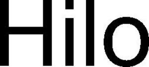

Trade Mark Journal No.2025/051 19 December 2025
WO0000001876090 (9,10,42,44)
Office of origin: Switzerland
Date of International Registration:6 June 2025
Date of designation in the UK:
6 June 2025

International priority date claimed: 16 December 2024
(Switzerland)
(824521)
- Class 9
- Scientific, nautical, surveying, photographic, cinematographic, optical, weighing, measuring, signaling, checking (supervision), life-saving and teaching apparatus and instruments; electric measuring apparatus; pressure measuring apparatus; optical sensors; sensors (measurement apparatus) other than for medical use; apparatus and instruments for conducting, switching, transforming, accumulating, regulating or controlling electricity; apparatus for sound or image recording, transmission and reproduction; data processing equipment, computers; smart watches; connected bracelets (measuring instruments); wearable activity trackers; software; downloadable computer software applications; application software; database management software; software for data and document capture, transmission, storage and indexing; downloadable software for remote monitoring and analysis; software for diagnosing, monitoring and treating cardiovascular health, metabolic health, respiratory health, hydration and electrolyte balance, neurological and cognitive health, musculoskeletal health, sleep and circadian rhythm, skin and peripheral health, mental health and stress, infections and immunology, gastrointestinal health, oncological monitoring, pregnancy and maternal health, chronic diseases, endocrine and hormonal health, pediatric health, environmental and occupational health, geriatric health, as well as on rehabilitation and recovery, physical activity and sports performance, lifestyle and behavioral analytics, post-treatment and long-term care monitoring, monitoring the results and safety of clinical trials, and developing and assessing medicines; electronic publications (downloadable) provided online from databases or the Internet; electronic publications (downloadable) available online from databases or the Internet on the diagnosis, monitoring and treatment of cardiovascular health, metabolic health, respiratory health, hydration and electrolyte balance, neurological and cognitive health, musculoskeletal health, sleep and circadian rhythm, skin and peripheral health, mental health and stress, infections and immunology, gastrointestinal health, oncological monitoring, pregnancy and maternal health, chronic diseases, endocrine and hormonal health, pediatric health, environmental and occupational health, geriatric health, as well as applications relating to rehabilitation and recovery, physical activity and sports performance, lifestyle and behavioral analytics, post-treatment and long-term care monitoring, monitoring the results and safety of clinical trials, and developing and assessing medicines.
- Class 10
- Surgical, medical, dental and veterinary apparatus and instruments; surgical, medical apparatus and instruments for the diagnosis, monitoring and treating of cardiovascular health, metabolic health, respiratory health, hydration and electrolyte balance, neurological and cognitive health, musculoskeletal health, sleep and circadian rhythm, skin and peripheral health, mental health and stress, infections and immunology, gastrointestinal health, oncological monitoring, pregnancy and maternal health, chronic diseases, endocrine and hormonal health, pediatric health, environmental and occupational health, geriatric health; orthopedic articles; suture materials; sphygmomanometers; blood pressure monitoring devices; sphygmomanometers; bracelets for medical use; heart-rate recorders; heart monitors; breathing monitors; diagnostic apparatus for medical use; diagnostic apparatus for medical use for the diagnosis of cardiovascular health, metabolic health, respiratory health, hydration and electrolyte balance, neurological and cognitive health, musculoskeletal health, sleep and circadian rhythm, skin and peripheral health, mental health and stress, infections and immunology, gastrointestinal health, oncological monitoring, pregnancy and maternal health, chronic diseases, endocrine and hormonal health, pediatric health, environmental and occupational health, geriatric health; all the aforesaid products not pertaining to the field of ophthalmology.
- Class 42
- Scientific and technological services as well as research and design services relating thereto; industrial analysis and research services; analysis of technical data; design and development of computers and software; design, development and updating of software; temporary provision of applications and software tools online; rental of computer software; upgrading and maintenance of software; temporary provision of non-downloadable software applications accessible via a website; development and testing of computing methods, algorithms and software; computer database design and development; maintenance of database software; temporary online provision of non-downloadable software for database management; design and development of computer software and hardware for producing, recording and processing digital and analog signals.
- Class 44
- Medical services; medical services for the diagnosis, monitoring and treatment of cardiovascular health, metabolic health, respiratory health, hydration and electrolyte balance, neurological and cognitive health, musculoskeletal health, sleep and circadian rhythms, skin and peripheral health, mental health and stress, infections and immunology, gastrointestinal health, oncological monitoring, pregnancy and maternal health, chronic diseases, endocrine and hormonal health, pediatric health, environmental and occupational health, geriatric health; surgical treatment services; medical screening services relating to cardiovascular diseases; medical and surgical diagnostic services; medical testing for the diagnosis and treatment of persons; rental of apparatus and installations in the field of medical technology; rental of apparatus and installations in the field of medical technology for the diagnosis, monitoring and treatment of cardiovascular health, metabolic health, respiratory health, hydration and electrolyte balance, neurological and cognitive health, musculoskeletal health, sleep and circadian rhythm, skin and peripheral health, mental health and stress, infections and immunology, gastrointestinal health, oncological monitoring, pregnancy and maternal health, chronic diseases, endocrine and hormonal health, pediatric health, environmental and occupational health, geriatric health; medical equipment rental; veterinary services; hygienic and beauty care for human beings or animals; all the aforementioned services not pertaining to the field of ophthalmology; agriculture, horticulture and forestry services.
aktiia SA
Representative: P&TS Marques SA, Avenue Jean-Jacques-Rousseau 4,, P.O. Box 2848, CH-2001 Neuchâtel, SWITZERLAND